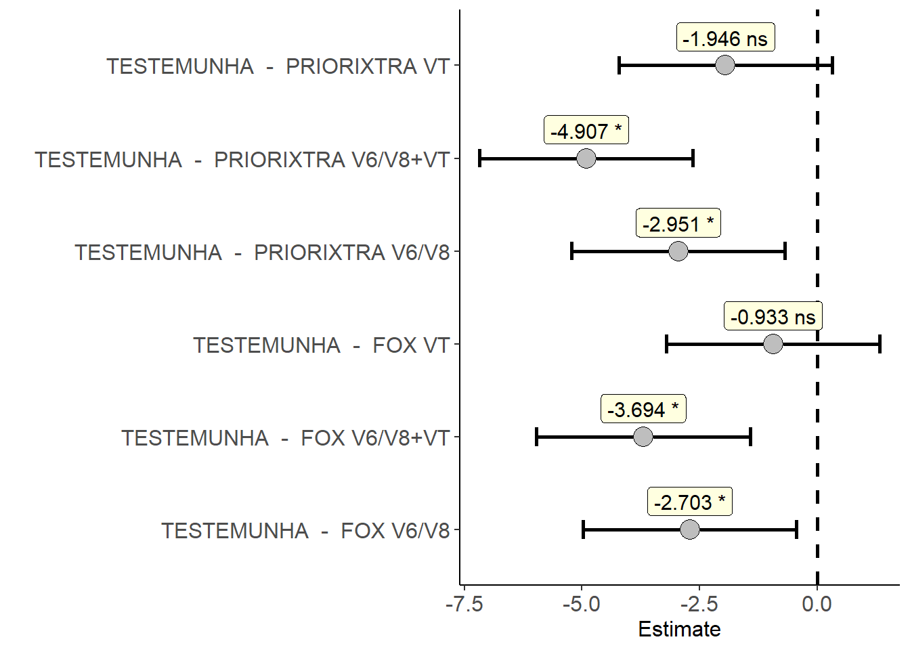
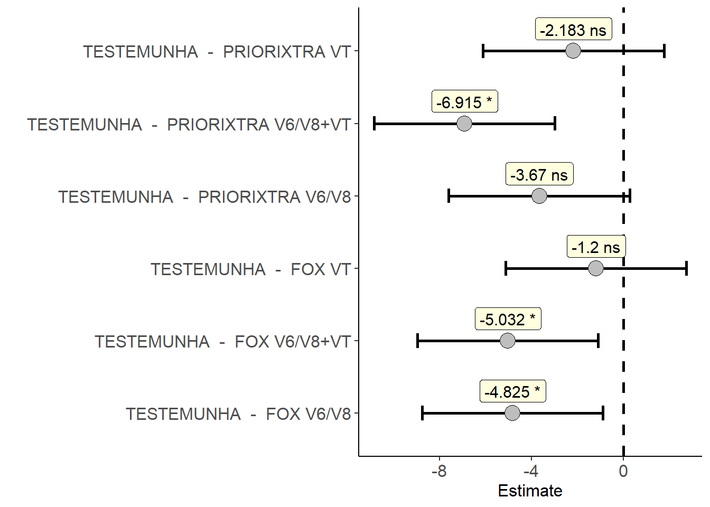
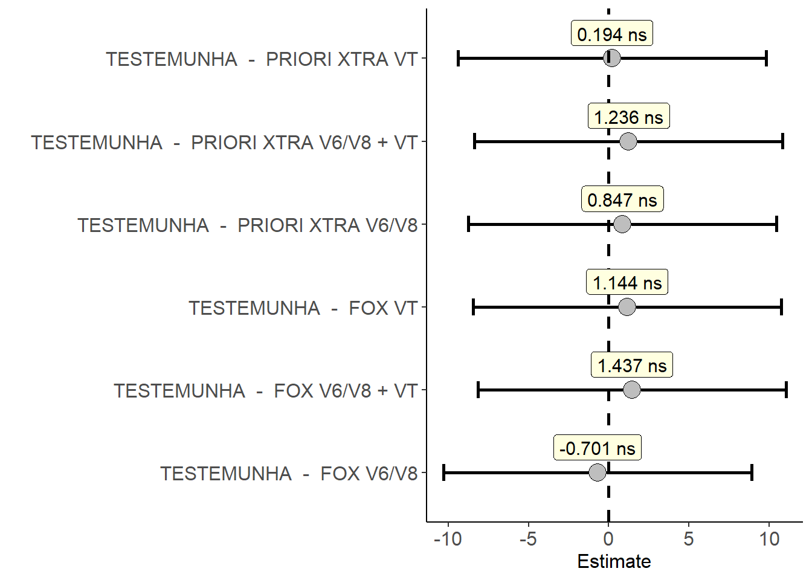

library(tidyverse)
library(gsheet)
library(epifitter)
library(lme4)
library(ExpDes.pt)
library(agricolae)
library(AgroR)
library(performance)Abordagem como Fatorial duplo com tratamento adicional em DBC
Pacotes
Pcotes utilizados no decorrer do código.
Importando os bancos de dados
# Dados de produtividade
dados <- gsheet2tbl('https://docs.google.com/spreadsheets/d/1KPWFOqs_Cclj3VgiHPxP3zazOmucRVAc/edit?gid=836516162#gid=836516162')
# Dados de severidade
dados2 <- gsheet2tbl('https://docs.google.com/spreadsheets/d/1KPWFOqs_Cclj3VgiHPxP3zazOmucRVAc/edit?gid=1484935950#gid=1484935950')Variáveis respostas
AACPD
Ajuste dos dados
Como na parcela foi avaliada 3 folhas por planta de 3 plantas, tem-se 9 valores por observação. Nesse caso, antes de prosseguir, vamos resumir esses valores em um único valor de severidade média. Dessa forma, reduzindo nosso banco de dados de 336 linhas para 112. Isso representa, 7 tratamentos, 4 blocos e 4 momentos de avaliação.
dados2 <- dados2 |>
mutate(sev.med = rowMeans(across(starts_with('sev_f')))) |>
dplyr::select(- c(9, 10, 11)) |>
group_by(treat, block, assessment) |>
summarise(sev.med = mean(sev.med))
dados2# A tibble: 112 × 4
# Groups: treat, block [28]
treat block assessment sev.med
<chr> <dbl> <dbl> <dbl>
1 FOX V6/V8 1 1 0.0444
2 FOX V6/V8 1 2 0.167
3 FOX V6/V8 1 3 1.84
4 FOX V6/V8 1 4 7.24
5 FOX V6/V8 2 1 0.0222
6 FOX V6/V8 2 2 0.111
7 FOX V6/V8 2 3 2.13
8 FOX V6/V8 2 4 1.7
9 FOX V6/V8 3 1 0.0556
10 FOX V6/V8 3 2 0.0556
# ℹ 102 more rowsComo nosso banco de dados (dados2), contêm os valores médios de severidade de cada tratamento, cada bloco e cada tempo de avaliação, é possível, utilizando a função AUDPC() do pacote EPIFITTER, calcular a área abaixo da curva de progresso da doença (AACPD).
aacpd1 <- dados2 |>
group_by(treat, block) |>
summarise(aacpd = AUDPC(assessment, sev.med))
aacpd <- aacpd1 |>
separate(col = treat, into = c('Fator1', 'Fator2'), sep = ' ')
aacpd2 <- aacpd |>
mutate(Fator2= ifelse(Fator1 == 'TESTEMUNHA', 0, Fator2))
aacpd2# A tibble: 28 × 4
Fator1 Fator2 block aacpd
<chr> <chr> <dbl> <dbl>
1 FOX V6/V8 1 5.66
2 FOX V6/V8 2 3.11
3 FOX V6/V8 3 2.59
4 FOX V6/V8 4 2.82
5 FOX V6/V8+VT 1 1.83
6 FOX V6/V8+VT 2 2.23
7 FOX V6/V8+VT 3 2.82
8 FOX V6/V8+VT 4 3.32
9 FOX VT 1 3.36
10 FOX VT 2 3.2
# ℹ 18 more rowsPremissas
P-valores > 0,05! Sinal verde para prosseguir com a análise paramétrica.
m1 <- lm(aacpd ~ Fator1*Fator2 + block, data = aacpd2)
check_normality(m1)OK: residuals appear as normally distributed (p = 0.335).check_heteroscedasticity(m1)OK: Error variance appears to be homoscedastic (p = 0.336).Anova e teste de Tukey
A função que iremos utilizar a seguir se chama fat2.ad.dbc(), do pacote ExpDes.pt. Essa função é dedicada a análise de dados onde o delinemaento adotado foi em blocos ao acaso em esquema fatorial 3x2 + 1. Para saber mais sobre a função e o sobre o pacote, execute no console os comandos: ?fat2.ad.dbc, para ajuda da função e ??ExpDes.pt, para informações sobre o pacote.
Antes de executar a função, devemos organizar os dados separando em dois dataframes. Os dados referente ao fatorial e os dados referente ao tratamento adicional. Em seguida, podemos preencher os argumentos da função como no código.
# Estruturando banco de dados
aacpd <- aacpd |>
mutate(treat.ad = ifelse(Fator1 == 'TESTEMUNHA', Fator1, NA)) |>
mutate(Fator1 = ifelse(Fator1 == 'TESTEMUNHA', NA, Fator1))
fatorial <- aacpd |>
filter(!is.na(Fator1))
treat.ad <- aacpd |>
filter(treat.ad == 'TESTEMUNHA')
# Rodando od testes
fat2.ad.dbc(fator1 = fatorial$Fator1, fator2 = fatorial$Fator2, bloco = fatorial$block, resp = fatorial$aacpd, respAd = treat.ad$aacpd, fac.names = c('Fungicidas', 'Estádios'))------------------------------------------------------------------------
Legenda:
FATOR 1: Fungicidas
FATOR 2: Estádios
------------------------------------------------------------------------
------------------------------------------------------------------------
Quadro da analise de variancia
------------------------------------------------------------------------
GL SQ QM Fc Pr>Fc
Bloco 3 8.46646 2.82215 2.1988 0.1234
Fungicidas 1 4.07917 4.07917 3.1782 0.0915
Estádios 2 32.75371 16.37686 12.7597 4e-04
Fungicidas*Estádios 2 1.03507 0.51754 0.4032 0.674
Ad vs Fatorial 1 27.96178 27.96178 21.7858 2e-04
Residuo 18 23.10271 1.28348
Total 27 97.39890
------------------------------------------------------------------------
CV = 29.83 %
------------------------------------------------------------------------
Teste de normalidade dos residuos (Shapiro-Wilk)
valor-p: 0.3965633
De acordo com o teste de Shapiro-Wilk a 5% de significancia, os residuos podem ser considerados normais.
------------------------------------------------------------------------
Contraste do tratamento adicional com o fatorial
------------------------------------------------------------------------
Medias
Adicional 6.245833 a
Fatorial 3.390046 b
------------------------------------------------------------------------
Interacao nao significativa: analisando os efeitos simples
------------------------------------------------------------------------
Fungicidas
De acordo com o teste F, as medias desse fator sao estatisticamente iguais.
------------------------------------------------------------------------
Niveis Medias
1 FOX 3.802315
2 PRIORIXTRA 2.977778
------------------------------------------------------------------------
Estádios
Teste de Tukey
------------------------------------------------------------------------
Grupos Tratamentos Medias
a VT 4.80625
a V6/V8 3.41875
b V6/V8+VT 1.945139
------------------------------------------------------------------------Como resultado da ANOVA, identificamos que existe diferença significativa entre os níveis do fator Estádio de aplicação e tratamento adicional versus fatorial. Não houve diferença significativa entre os níveis do fator Fungicidas.
O teste de Tukey, aplicado sobre os níveis do fator estádio, indicou que realizando a aplicação dos fungicidas nos estádio V6/V8 e em VT é melhor do aplicar em V6/V8 ou em VT.
O teste anterior mostrou que existe diferença entre o fatorial versus o tratamento adicional. No entanto, ele não discriminou o tratamento adicional versus a combinação dos níveis dos dois fatores. Dessa forma, adotamos o teste de Dunnett para conseguir identificar quais foram os tratamentos estatisticamente diferentes da testemunha.
Teste de Dunnett
O teste de Dunnet é um teste adotado quando se deseja comparar as médias dos tratamentos contra a média de um tratamento de interesse. No nosso caso, confrontamos contra o tratamento testemunha.
dunnett(trat = aacpd1$treat, resp = aacpd1$aacpd, control = 'TESTEMUNHA', model = 'DBC', block = aacpd1$block) Estimate IC-lwr IC-upr t value
TESTEMUNHA - FOX V6/V8 -2.7027778 -4.970610 -0.4349456 -3.3739
TESTEMUNHA - FOX V6/V8+VT -3.6944444 -5.962277 -1.4266122 -4.6118
TESTEMUNHA - FOX VT -0.9333333 -3.201166 1.3344989 -1.1651
TESTEMUNHA - PRIORIXTRA V6/V8 -2.9513889 -5.219221 -0.6835567 -3.6842
TESTEMUNHA - PRIORIXTRA V6/V8+VT -4.9069444 -7.174777 -2.6391122 -6.1254
TESTEMUNHA - PRIORIXTRA VT -1.9458333 -4.213666 0.3219989 -2.4290
p-value sig
TESTEMUNHA - FOX V6/V8 0.0163 *
TESTEMUNHA - FOX V6/V8+VT 0.0012 *
TESTEMUNHA - FOX VT 0.7138 ns
TESTEMUNHA - PRIORIXTRA V6/V8 0.0085 *
TESTEMUNHA - PRIORIXTRA V6/V8+VT 0.0000 *
TESTEMUNHA - PRIORIXTRA VT 0.1090 ns
Percebemos que exceto os tratamentos PRIORI XTRA VT e FOX VT, todos os tratamentos foram significativos contra a testemunha sem aplicação.
Y máx
A partir de agora, o processo é semelhante para as demais variáveis.
Ajuste dos dados
y.max1 <- dados2 |>
filter(assessment == 4)
y.max1$sev.med <- round(y.max1$sev.med, 2)
y.max <- y.max1 |>
separate(col = treat, into = c('Fator1', 'Fator2'), sep = ' ')
y.max <- y.max |>
mutate(treat.ad = ifelse(Fator1 == 'TESTEMUNHA', Fator1, NA))
y.max <- y.max |>
mutate(Fator1 = ifelse(Fator1 == 'TESTEMUNHA', NA, Fator1))Premissas
Premissas atendidas!
y.max.pre <- y.max |>
dplyr::select(-treat.ad, -assessment) |>
mutate(Fator1 = ifelse(is.na(Fator1), 'TESTEMUNHA', Fator1)) |>
mutate(Fator2 = ifelse(is.na(Fator2), 0, Fator2))
m2 <- lm(sev.med ~ Fator1*Fator2 + block, y.max.pre)
check_normality(m2)OK: residuals appear as normally distributed (p = 0.788).check_heteroscedasticity(m2)OK: Error variance appears to be homoscedastic (p = 0.377).Anova e teste de Tukey
fator.y <- y.max |>
filter(!-is.na(Fator1))
treat.ad.y <- y.max |>
filter(!-is.na(treat.ad))
fat2.ad.dbc(fator1 = fator.y$Fator1, fator2 = fator.y$Fator2, bloco = fator.y$block, resp = fator.y$sev.med, respAd = treat.ad.y$sev.med, fac.names = c('Fungicidas', 'Estádios'))------------------------------------------------------------------------
Legenda:
FATOR 1: Fungicidas
FATOR 2: Estádios
------------------------------------------------------------------------
------------------------------------------------------------------------
Quadro da analise de variancia
------------------------------------------------------------------------
GL SQ QM Fc Pr>Fc
Bloco 3 50.17521 16.72507 4.3367 0.0182
Fungicidas 1 1.94940 1.9494 0.5055 0.4862
Estádios 2 74.27776 37.13888 9.6298 0.0014
Fungicidas*Estádios 2 9.73687 4.86844 1.2623 0.3069
Ad vs Fatorial 1 54.06006 54.06006 14.0173 0.0015
Residuo 18 69.41976 3.85665
Total 27 259.61907
------------------------------------------------------------------------
CV = 34.86 %
------------------------------------------------------------------------
Teste de normalidade dos residuos (Shapiro-Wilk)
valor-p: 0.2531165
De acordo com o teste de Shapiro-Wilk a 5% de significancia, os residuos podem ser considerados normais.
------------------------------------------------------------------------
Contraste do tratamento adicional com o fatorial
------------------------------------------------------------------------
Medias
Adicional 9.037500 a
Fatorial 5.066667 b
------------------------------------------------------------------------
Interacao nao significativa: analisando os efeitos simples
------------------------------------------------------------------------
Fungicidas
De acordo com o teste F, as medias desse fator sao estatisticamente iguais.
------------------------------------------------------------------------
Niveis Medias
1 FOX 5.351667
2 PRIORIXTRA 4.781667
------------------------------------------------------------------------
Estádios
Teste de Tukey
------------------------------------------------------------------------
Grupos Tratamentos Medias
a VT 7.34625
b V6/V8 4.79
b V6/V8+VT 3.06375
------------------------------------------------------------------------Como resultado da ANOVA, identificamos diferença significativa também entre os níveis do fator Estádio e do tratamento adicional versus o fatorial. Não houve diferença significativa entre os níveis do fator Fungicida sobre a variável de intensidade máxima (Ymax).
O teste de Tukey indicou que entre os níveis do fator Estádio, as aplicaçãoes em V6/V8 e em V6/V8 + VT é melhor do que fazer uma única aplicação em VT.
Teste de Dunnett
dunnett(trat = y.max1$treat, resp = y.max1$sev.med, control = 'TESTEMUNHA', model = 'DBC', block = y.max1$block) Estimate IC-lwr IC-upr t value
TESTEMUNHA - FOX V6/V8 -4.8250 -8.751076 -0.8989239 -3.4746
TESTEMUNHA - FOX V6/V8+VT -5.0325 -8.958576 -1.1064239 -3.6240
TESTEMUNHA - FOX VT -1.2000 -5.126076 2.7260761 -0.8642
TESTEMUNHA - PRIORIXTRA V6/V8 -3.6700 -7.596076 0.2560761 -2.6429
TESTEMUNHA - PRIORIXTRA V6/V8+VT -6.9150 -10.841076 -2.9889239 -4.9797
TESTEMUNHA - PRIORIXTRA VT -2.1825 -6.108576 1.7435761 -1.5717
p-value sig
TESTEMUNHA - FOX V6/V8 0.0130 *
TESTEMUNHA - FOX V6/V8+VT 0.0095 *
TESTEMUNHA - FOX VT 0.8905 ns
TESTEMUNHA - PRIORIXTRA V6/V8 0.0725 ns
TESTEMUNHA - PRIORIXTRA V6/V8+VT 0.0006 *
TESTEMUNHA - PRIORIXTRA VT 0.4460 ns
Como resultado do teste de Dunnett, os tratamentos PRIORI XTRA V6/V8+VT, FOX V6/V8+VT e FOX V6/V8 apresentaram diferença significativa da testemunha.
PRODUTIVIDADE
Ajuste dos dados
produtividade <- dados |>
dplyr::select(Fator1, Fator2, treat.ad, block, productivity)
trat.ad <- produtividade |>
filter(treat.ad == 'TESTEMUNHA') |>
dplyr::select(productivity)
fatorial <- produtividade |>
filter(!is.na(Fator1))Premissas
Premissas atendidas!
prod.pre <- produtividade |>
dplyr::select(-treat.ad) |>
mutate(Fator1 = ifelse(is.na(Fator1), 'TESTEMUNHA', Fator1)) |>
mutate(Fator2 = ifelse(is.na(Fator2), 0, Fator2))
m3 <- lm(productivity ~ Fator1*Fator2 + block, prod.pre)
check_normality(m3)OK: residuals appear as normally distributed (p = 0.197).check_heteroscedasticity(m3)OK: Error variance appears to be homoscedastic (p = 0.516).Anova e teste de Tukey
fat2.ad.dbc(fator1 = fatorial$Fator1, fator2 = fatorial$Fator2, bloco = fatorial$block, resp = fatorial$productivity, respAd = trat.ad$productivity, fac.names = c('Fungicidas', 'Estádios'))------------------------------------------------------------------------
Legenda:
FATOR 1: Fungicidas
FATOR 2: Estádios
------------------------------------------------------------------------
------------------------------------------------------------------------
Quadro da analise de variancia
------------------------------------------------------------------------
GL SQ QM Fc Pr>Fc
Bloco 3 95.27103 31.75701 1.3821 0.2803
Fungicidas 1 0.10544 0.10544 0.0046 0.9467
Estádios 2 6.39422 3.19711 0.1391 0.871
Fungicidas*Estádios 2 6.57066 3.28533 0.143 0.8677
Ad vs Fatorial 1 1.64647 1.64647 0.0717 0.792
Residuo 18 413.59904 22.97772
Total 27 523.58686
------------------------------------------------------------------------
CV = 10.52 %
------------------------------------------------------------------------
Teste de normalidade dos residuos (Shapiro-Wilk)
valor-p: 0.6858194
De acordo com o teste de Shapiro-Wilk a 5% de significancia, os residuos podem ser considerados normais.
------------------------------------------------------------------------
Contraste do tratamento adicional com o fatorial
------------------------------------------------------------------------
De acordo com o teste F, as medias dos dois grupos sao estatisticamente iguais.
Medias
Adicional 44.97452
Fatorial 45.66750
------------------------------------------------------------------------
Interacao nao significativa: analisando os efeitos simples
------------------------------------------------------------------------
Fungicidas
De acordo com o teste F, as medias desse fator sao estatisticamente iguais.
------------------------------------------------------------------------
Niveis Medias
1 FOX 45.60122
2 PRIORI XTRA 45.73378
------------------------------------------------------------------------
Estádios
De acordo com o teste F, as medias desse fator sao estatisticamente iguais.
------------------------------------------------------------------------
Niveis Medias
1 V6/V8 45.04767
2 V6/V8 + VT 46.31132
3 VT 45.64350
------------------------------------------------------------------------Sobre a variável produtividade, não houve diferença significativa para os fatores, para a interação e nem para o fatorial versus tratamento adicional. De maneira geral, não existe ganhos em produtividade quando se adota os tratamentos. A análise pode ser finalizada aqui para esta variável. Entretando para visualizar isso graficamente vamos realizar o teste de Dunnett.
Teste de Dunnett
produtividade2 <- produtividade |>
mutate(Fator1 = ifelse(is.na(Fator1), 'TESTEMUNHA', Fator1 )) |>
unite(col = treat, Fator1, Fator2, sep = ' ', na.rm = TRUE)
dunnett(trat = produtividade2$treat, resp = produtividade2$productivity, control = 'TESTEMUNHA', model = 'DBC', block = produtividade2$block) Estimate IC-lwr IC-upr t value
TESTEMUNHA - FOX V6/V8 -0.7009225 -10.295307 8.893462 -0.2068
TESTEMUNHA - FOX V6/V8 + VT 1.4375000 -8.156885 11.031885 0.4241
TESTEMUNHA - FOX VT 1.1435200 -8.450865 10.737905 0.3374
TESTEMUNHA - PRIORI XTRA V6/V8 0.8472225 -8.747162 10.441607 0.2500
TESTEMUNHA - PRIORI XTRA V6/V8 + VT 1.2361125 -8.358272 10.830497 0.3647
TESTEMUNHA - PRIORI XTRA VT 0.1944475 -9.399937 9.788832 0.0574
p-value sig
TESTEMUNHA - FOX V6/V8 0.9999 ns
TESTEMUNHA - FOX V6/V8 + VT 0.9958 ns
TESTEMUNHA - FOX VT 0.9988 ns
TESTEMUNHA - PRIORI XTRA V6/V8 0.9998 ns
TESTEMUNHA - PRIORI XTRA V6/V8 + VT 0.9981 ns
TESTEMUNHA - PRIORI XTRA VT 1.0000 ns
Como já era sabido. Não há diferença da combinação dos níveis dos dois fatores versus a testemunha.